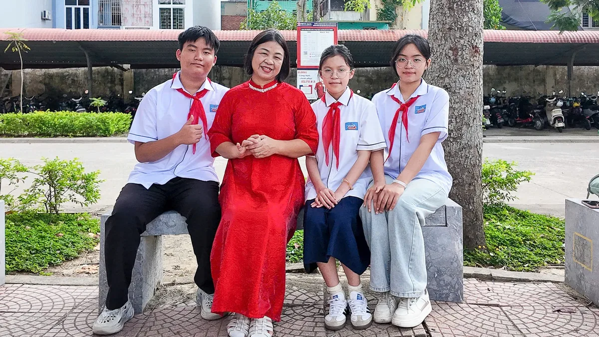
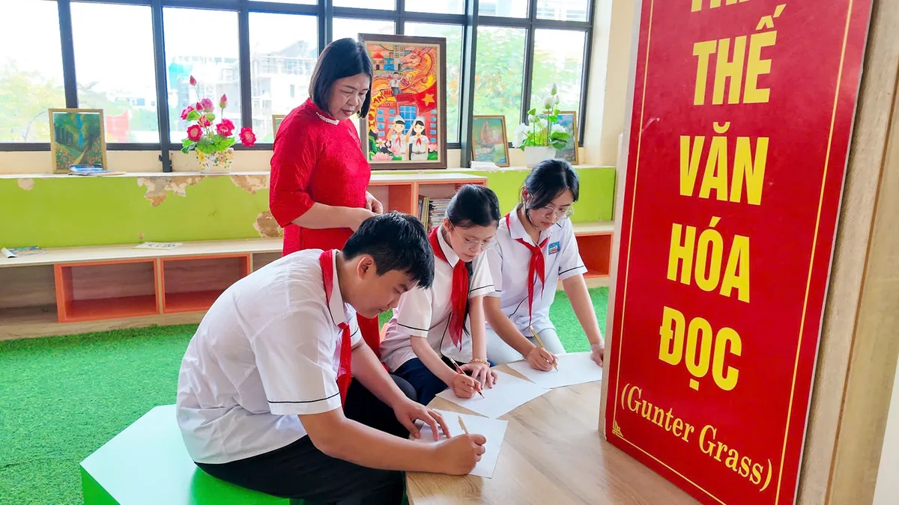

Nam và nữ phải làm mọi việc giống hệt nhau
↓
Tôn trọng khác biệt, tạo cơ hội công bằng.
Phá bỏ khuôn mẫu, tự tin tỏa sáng.
Mỗi học sinh đều có quyền khám phá sở thích, phát triển năng lực và theo đuổi ước mơ mà không bị bó buộc bởi những khuôn mẫu giới.
Khám phá ngay ↗Chạm để nhận diện, thấu hiểu, lựa chọn, hành động và lan tỏa.
Mỗi cánh cửa là một cơ hội để hiểu hơn, tôn trọng hơn và cùng nhau thay đổi.
Những lời nói tưởng chừng bình thường đôi khi vô tình tạo nên giới hạn trong suy nghĩ và lựa chọn. Hãy bắt đầu bằng việc nhận ra chúng.
Đi đến 5 tình huống ↗Bắt đầu từ những khái niệm nền tảng, nhận diện cách hiểu chưa đúng và nhìn rõ hơn về cơ hội phát triển bình đẳng.
Khám phá trang kiến thức ↗Nhận diện những cách hiểu chưa đúng và mở ra góc nhìn phù hợp hơn.
↓
Tôn trọng khác biệt, tạo cơ hội công bằng.
↓
Không phân biệt đối xử; hỗ trợ phù hợp khi cần.
↓
Mọi thành viên đều có trách nhiệm chia sẻ.
↓
Lựa chọn theo năng lực, sở thích và yêu cầu thực tế.
Bấm vào từng thẻ để mở nội dung.
Những đặc điểm sinh học của nam và nữ; khác với vai trò, kỳ vọng xã hội.
Những đặc điểm, vị trí và vai trò của nam và nữ trong các mối quan hệ xã hội.
Cách nhìn nhận, đánh giá thiên lệch, tiêu cực về đặc điểm, vai trò, năng lực của nam hoặc nữ.
Nam và nữ có vị trí, vai trò ngang nhau, có điều kiện và cơ hội phát huy năng lực, đóng góp và thụ hưởng thành quả phát triển.
Một câu nói, một ánh nhìn hay lời nhận xét tưởng như vô tình cũng có thể khiến ai đó tự thu hẹp khả năng của mình.
Bối cảnh: Minh bị chấn thương khi đá bóng và bật khóc. Một số bạn trêu: “Con trai mà khóc nhè!”.
Giải mã: Cảm xúc không phải sự yếu kém.
Hành động: Không trêu chọc; hỏi thăm và hỗ trợ bạn.
Bối cảnh: Lan muốn tham gia thi robot nhưng nghe: “Con gái học công nghệ khó lắm!”.
Giải mã: Năng lực công nghệ không do giới tính quyết định.
Hành động: Khuyến khích thử sức, đánh giá theo nỗ lực và kỹ năng.
Bối cảnh: Sau bữa tối, bố và con trai xem tivi, mẹ và con gái dọn dẹp.
Giải mã: Việc nhà là trách nhiệm chung.
Hành động: Chia sẻ công việc theo tuổi và khả năng.
Bối cảnh: Hà đăng ký đội bóng nhưng bị phản đối vì là con gái.
Giải mã: Sở thích thể thao không nên bị hạn chế bởi định kiến.
Hành động: Tạo điều kiện tham gia theo tiêu chí phù hợp.
Bối cảnh: Một bạn nam thích nghề giáo viên mầm non nhưng bị chê.
Giải mã: Nghề nghiệp cần cân nhắc năng lực, sở thích và điều kiện.
Hành động: Tôn trọng lựa chọn nghề nghiệp.
Nơi mỗi học sinh được lắng nghe, khích lệ và có cơ hội tham gia phù hợp với năng lực, sở thích.


Ba câu chuyện minh họa: Bữa cơm của cả nhà; Ước mơ của Mai; Nam và những món ăn đầu tiên.
Các câu chuyện là tình huống minh họa, không phải nhân vật có thật.Đọc bài viết đầy đủ ↗Tìm hiểu những quy định về bình đẳng giới, quyền và trách nhiệm của mỗi người qua các thẻ pháp luật được diễn giải dễ hiểu.
Mở thư viện pháp luật ↗Thử sức với 10 câu hỏi tình huống để nhìn lại cách suy nghĩ và lựa chọn cách ứng xử phù hợp. Mỗi câu trả lời đều đi kèm phần giải thích.
Vào trò chơi ↗Thử thách 7 ngày giúp mỗi người bắt đầu từ một lời nói, một việc sẻ chia và một hành động tôn trọng mỗi ngày.
Tham gia thử thách 7 ngày ↗Phá bỏ khuôn mẫu, tự tin tỏa sáng.